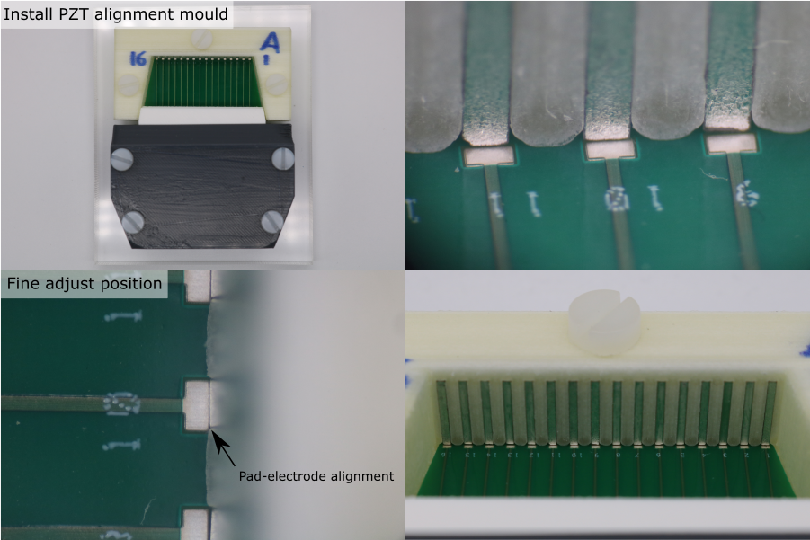
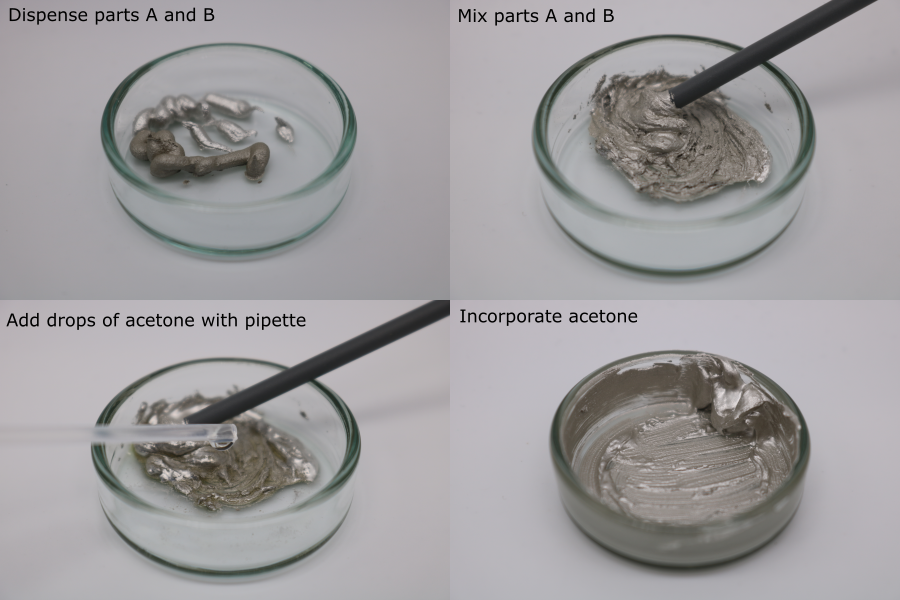
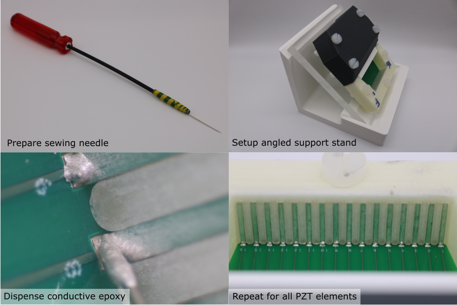

Rear Electrode Connection
PZT-Housing Registration
- Place the pre-loaded alignment mould onto the base plate, so that the interconnect PCB fits into the alignment mould PCB recess.
- Install the M5 x 20 mm nylon screws, through the alignment mould, into the base plate.
- Tighten the screws so that the alignment mould is clamped but can be re-positioned.
- Under a microscope, perform the final alignment. The rear electrode of every PZT element must be directly above the front edge of its corresponding PCB pad.
- Tighten the screws fully.
- Inspect the final alignment under a microscope to check that the parts have not shifted when the screws were tightened.
- Use an air duster to blow any debris out of the cavity.

Conductive Epoxy Preparation
Note: Dilution with acetone has only been verified with MG chemicals 8331-14G. If using a different conductive epoxy, prepare a test sample to check the effect of acetone ratio on viscosity, and to verify that diluting with acetone does not affect the electrical and mechanical properties after curing.
- Place a glass petri dish on a digital balance (resolution should be 0.01 g or better) and tare it.
- Dispense 0.5 g of conductive epoxy part A.
- Tare the balance.
- Dispense 0.5 g of conductive epoxy part B.
- Mix part A and part B with a small plastic rod (e.g. the handle of a foam swab).
- Place the petri dish on the balance and tare it.
- Using a pipette, dispense 0.1 g of acetone.
- Incorporate the acetone.

Rear Electrode Connection
Note: The acetone evaporates from the mixture, increasing its viscosity. The effect of repeated dilution on the cured electrical properties of MG 8331-14G has not been tested. Instead, dispose of the mixture once it becomes too viscous to use, and prepare a new batch. Typically, it lasts for 15 minutes, which is enough time for ~3 transducer modules.
- Place the module assembly on the angled support plate, under a microscope.
- Prepare a dispensing tool - attach a sewing needle to a long rod using tape.
- Collect a drop of diluted conductive epoxy on the needle tip.
- Place the drop on the PCB pad, and move the needle tip in small circles so that the drop touches the rear electrode. The conductive epoxy should form a smooth fillet.
- Repeat this process for all PZT elements in the transducer module.
Allow the conductive epoxy to cure for 24 hours. Once the conductive epoxy has cured, use a multimeter to check continuity between the conductive epoxy fillet and the rear electrode. Fix any defective joints if necessary.
Note: If the conductive epoxy is accidentally placed on the alignment mould, remove it after curing with a scalpel. If it is accidentally placed on the rear electrode, wipe off as much as possible with a foam swab, and any cured residue with a small piece of P2000 grit sandpaper held in a pair of forceps. In both cases remove any debris with an air duster. Do not use solvents at any point, since they can dissolve the PVA alignment mould and deposit a thin layer of PVA on the rear electrode, preventing proper bonding with the backing layer composite.
